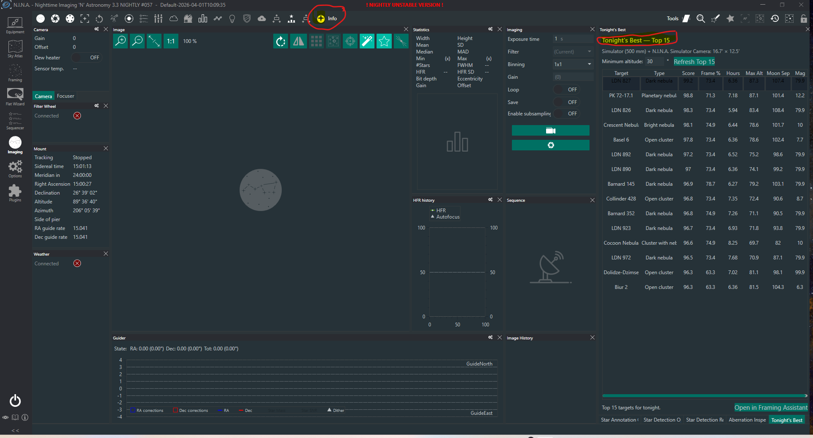

{kind=link}
Read your setup
Uses the active observing location, optional horizon, effective focal length, connected camera dimensions, and pixel size.
Tonight's Best ranks deep-sky targets for your active location, telescope, camera, field of view, Moon, and observing window—then sends your selection straight to Framing Assistant.
| Target | Type | Score | Frame |
|---|---|---|---|
| LDN 827 | Dark nebula | 99.2 | 73.4% |
| PK 72-17.1 | Planetary nebula | 98.8 | 71.3% |
| Crescent Nebula | Bright nebula | 98.1 | 74.9% |
| Basel 6 | Open cluster | 97.8 | 73.4% |
Tonight's Best is a dockable panel in the Imaging workspace. The highlighted toolbar icon identifies the plugin, while the panel shows the ranked Top 15 and the Framing Assistant action.

The plugin works with the N.I.N.A. profile you already maintain. There is no second catalog or duplicate equipment setup.
Uses the active observing location, optional horizon, effective focal length, connected camera dimensions, and pixel size.
Evaluates the N.I.N.A. Sky Atlas against visibility, altitude, Moon clearance, framing, and object type.
Select one of the Top 15 and open it in Framing Assistant for rotation, mosaic planning, and Advanced Sequencer handoff.
Requires N.I.N.A. 3.2.0.9001 or later. Install through N.I.N.A.'s Plugin Manager when listed, or use the current release manually.
View releases%LOCALAPPDATA%\NINA\Plugins\3.0.0\Tonight's Best.Set your latitude and longitude, enter the telescope's effective focal length, and connect the selected camera so N.I.N.A. can report its sensor dimensions and pixel size. Simulator equipment works too.
Latitude, longitude, elevation, and an optional custom horizon come directly from the active profile.
Use the effective focal length after any reducer or Barlow so framing calculations match the actual imaging train.
Connect the camera to provide width, height, and pixel size for an accurate rectangular field of view.
Every target receives a score out of 100. The weights favor usable imaging time and clear framing while accounting for the Moon and target altitude.
Frame coverage is an estimate based on the object's catalog ellipse and your rectangular camera field. A value above 100% means the catalog footprint is larger than one frame; faint extensions may not be represented in catalog dimensions.
Open the panel, choose your minimum altitude, refresh the Top 15, and send the target you want to Framing Assistant.